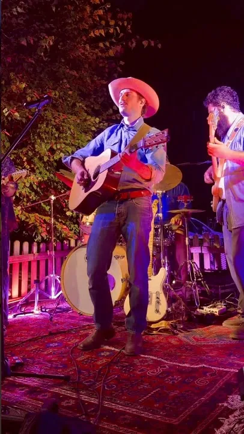
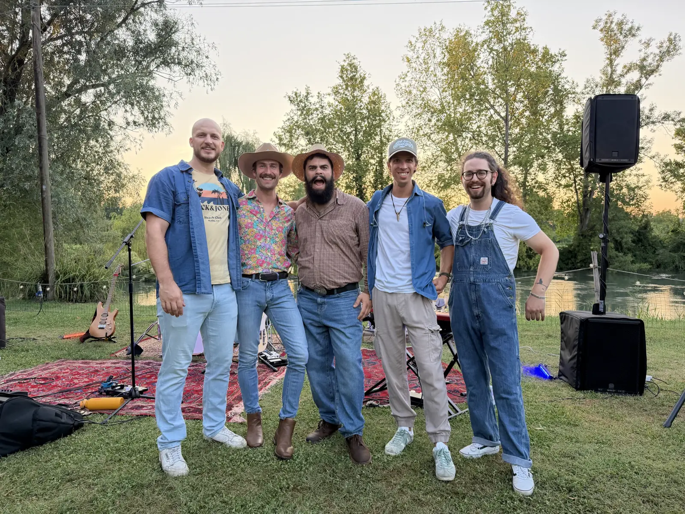
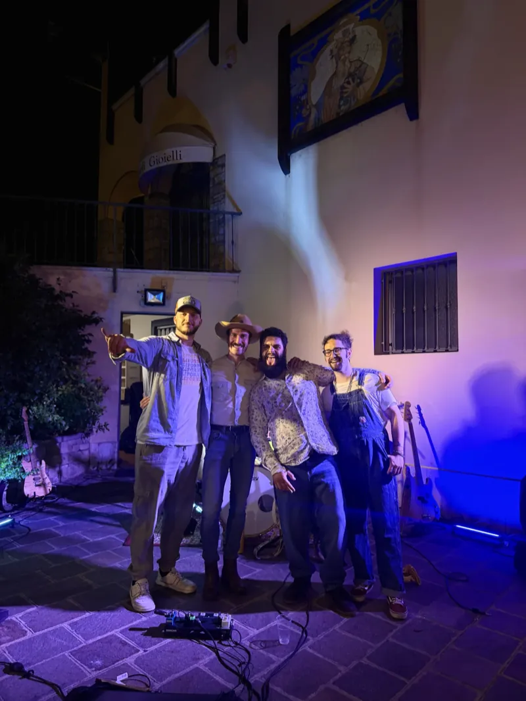
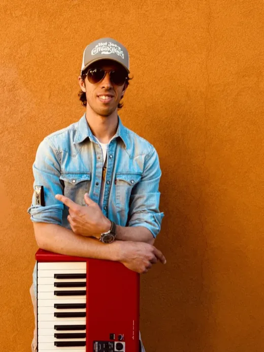
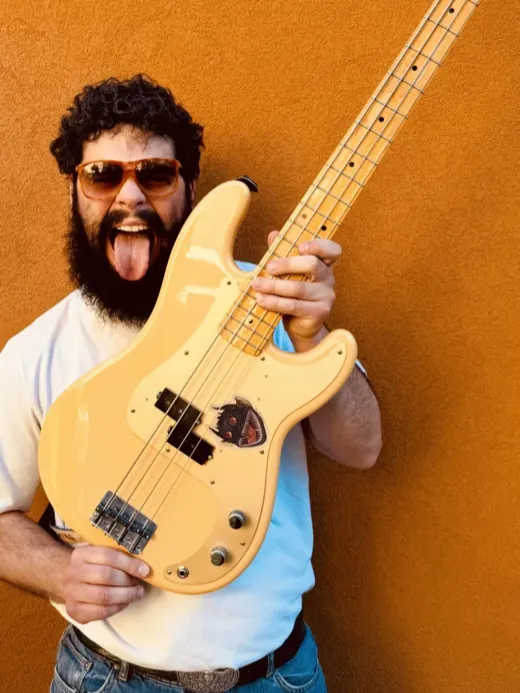
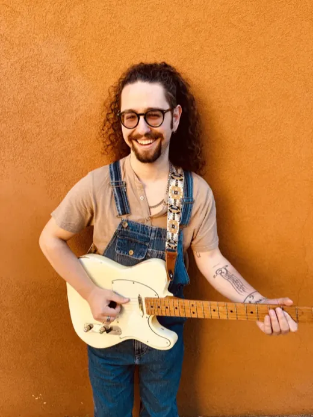
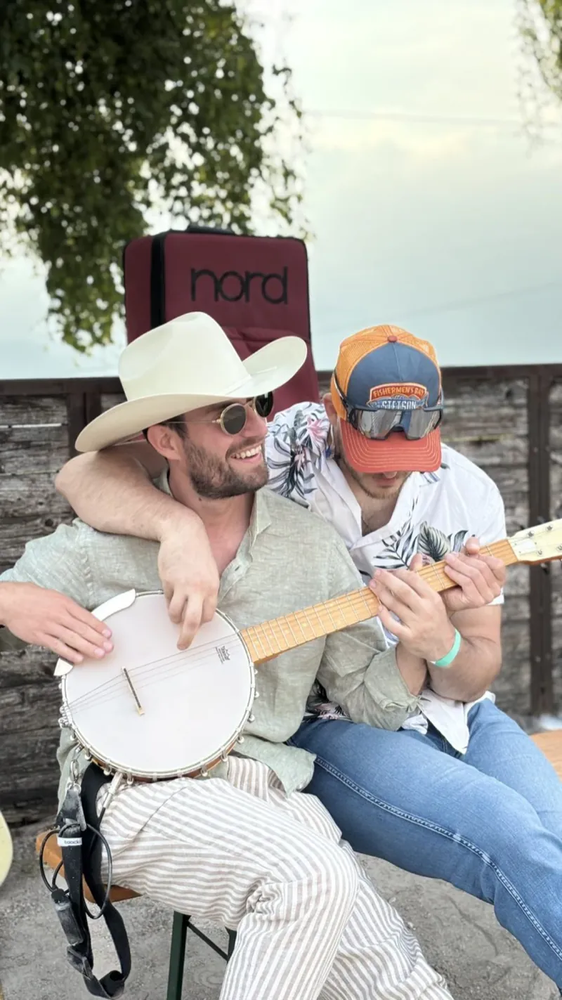

Cinque musicisti, chitarre e armonie vocali. Portiamo il country americano di oggi: brani da ballare e ballad da ascoltare, scelti sulla serata che hai in mente.
Un minuto dal vivo, ripreso da chi era davanti al palco. È Jolene di Dolly Parton, alla Locanda Obante di Recoaro Terme: cinque strumenti veri, tre voci e nessuna base.
Un minuto, e sai se siamo noi.

Jolene · Dolly PartonCountry americano, neotradizionale e contemporaneo: quello che a Nashville si suona dagli anni Novanta in poi. Con due o tre eccezioni più vecchie che valgono il viaggio — Country Roads di John Denver, Jolene di Dolly Parton.
Se qui trovi i tuoi, siamo noi.
Dentro quel recinto ci sono due mondi, e li usiamo entrambi: la scelta la fa la serata, non un formato deciso a tavolino.
Volume da tavolo e brani lenti: si mangia, si chiacchiera e la musica non copre nessuno.
Party song e ritmo: chi vuole ballare balla, agli altri resta il piede che batte.

Cinque che si divertono. E si vede.
Il country in Italia lo suonano in pochi: ai tuoi ospiti arriva una cosa che non hanno già sentito tre volte quest’anno.
Il ritmo della serata lo decidiamo insieme, prima che cominci. Poi lo seguiamo: se la sala chiede calma stiamo bassi, se chiede di alzarsi alziamo.
Arriviamo, montiamo, suoniamo e smontiamo. A te resta da goderti la serata.
Un’ora e 45 di musica, in uno o due set, con la pausa dove ti serve. È questo che portiamo, ed è quello che la gente si ricorda: nella maggior parte delle serate non serve altro.
Ballad e brani lenti, volume da tavolo: si mangia, si parla, si sta bene.

Entrano le elettriche e il ritmo. La sala capisce che sta cominciando qualcosa.

Party song e cori, e il piede che batte anche a chi resta seduto.
Capita: una festa che apre a mezzogiorno, una sagra che va avanti fino a notte. Allora allo show si aggiunge un set acustico di circa un’ora, oppure lasciamo l’impianto acceso con la nostra musica country nelle ore in cui il palco è vuoto. Si mette a punto quando scriviamo il preventivo.
Vale per chi ha una giornata intera da riempire. Per tutti gli altri il conto è più semplice: c’è lo show, e lo show basta.
Noi la scaletta. Tu il ritmo.
Arriviamo col furgone qualche ora prima: impianto, luci e chi li fa funzionare sono nostri. A te bastano un angolo e una presa della corrente.
Tre voci, scritte separate. Così vedi da dove viene il numero — e dove puoi intervenire tu.
Circa due ore di musica, cinque musicisti, impianto e luci nostri. È la voce principale, e dipende da che serata è e da quanta gente aspetti.
Voce a parte, scritta prima: mai una sorpresa in fondo al foglio. Sotto i 50-60 chilometri è già dentro.
Solo quando la distanza lo chiede davvero: cinque persone e un furgone che, a fine serata, hanno ancora tutta la strada da rifare.
Se ci ospiti tu — un pasto, e un letto quando siamo lontani — il preventivo si abbassa: della trasferta resta solo il rimborso dei chilometri.
SIAE e permessi restano in capo a chi organizza la serata, come per qualsiasi concerto. Noi ti diamo l’elenco dei brani, che è quello che serve per il borderò.
Un cliente che ti richiama è la recensione che conta.
Chitarre e voce
Ma l’hamburger c’è anche vegetale?
Batteria e voci
Potevamo fare di meglio.

Piano e armonica
Raga questo è troppo country!

Basso e contrabbasso
Birretta?

Chitarre e lap steel
Ti serve «qualunque cosa»? Ce l’ho.

Il modulo qui sotto, due minuti. Che serata è, quando, dove e quanta gente aspetti.
Scritto, entro 24 ore, con tutto dentro e il viaggio in chiaro. Vale 15 giorni.
Il 30% alla conferma, il saldo la sera. Da quel momento quella data è tua.
Dipende da quanta gente aspetti, da quanto siamo lontani e da quanto suoniamo. Nel modulo scegli l’ordine di spesa in cui ti muovi e entro 24 ore hai il numero scritto, con il viaggio come voce a parte. Il preventivo vale 15 giorni e non cambia dopo.
Due cose che lo spostano davvero: se il tuo posto ha già un impianto si fa la versione senza, e se ci ospiti tu — pasto e letto — della trasferta resta solo il rimborso dei chilometri.
Country americano, neotradizionale e contemporaneo: in generale dagli anni Novanta in poi. Zach Top, Chris Stapleton, Brad Paisley, Zac Brown Band, Blake Shelton, Darius Rucker, The Kruse Brothers — con due o tre eccezioni più vecchie che valgono il viaggio, tipo Country Roads di John Denver e Jolene di Dolly Parton.
Dentro quel recinto ci sono ballad da ascolto e brani da ballare, e la scelta la fa la serata: nessuno è obbligato a ballare e nessuno deve mettersi il cappello. Se hai due o tre brani del cuore, dilli quando chiedi il preventivo.
No. Portiamo tutto noi e lo montiamo noi: ci bastano un angolo di cinque metri per tre e una presa della corrente. Se il tuo posto ha già un impianto, tanto meglio: si fa la versione senza, e costa meno.
Lo show dura circa due ore: un’ora e 45 di musica, in uno o due set, con la pausa dove ti serve. L’orario lo decidi tu: a pranzo, all’aperitivo, dopo cena.
Se hai una giornata intera da coprire, allo show si aggiunge un set acustico di circa un’ora, oppure lasciamo l’impianto acceso con la nostra musica nelle ore in cui il palco è vuoto. Si decide insieme quando scriviamo il preventivo, e resta scritto lì.
Sì. Nel 2026, oltre alla Lombardia, ci hanno chiamati da Veneto, Trentino, Friuli, Piemonte, Emilia-Romagna e Liguria. Il rimborso viaggio è una voce a parte del preventivo, scritta prima.
All’aperto ci serve un riparo per l’attrezzatura: un gazebo, una tettoia, un palco coperto. Il piano B si concorda quando si conferma la data, non la mattina stessa.
Restano in capo a chi organizza la serata, come per qualsiasi concerto. Noi ti diamo l’elenco dei brani, che è quello che serve per il borderò.
Otto domande, due minuti. Le legge Mike, non un robot — e ti risponde con proposta, scaletta tipo e prezzo entro 24 ore.